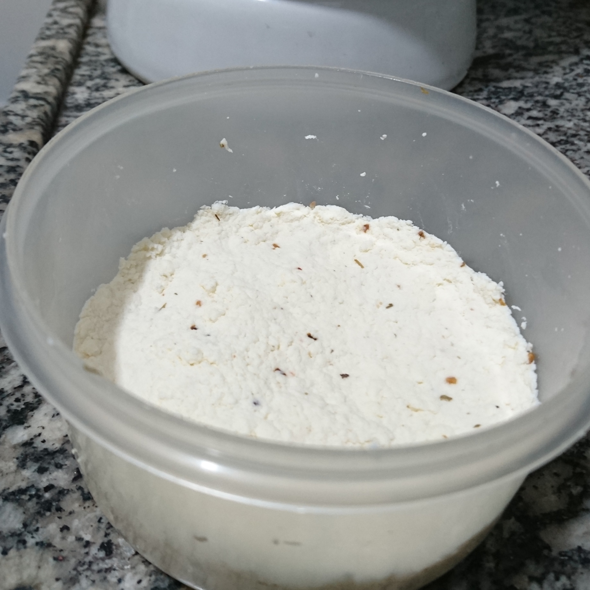

Receitas
Podemos usar o iogurte de kefir para preparar várias receitas.
Receita de kefir com gelatina
Ingredientes:
- 1 saquinho de gelatina de qualquer sabor
- 500 ml de iogurte de kefir
- 100 ml de água
- açúcar à gosto
Modo de preparo:
Colocar a água na panela e deixar fervê-la. Em seguida acrescentar a gelatina e mexer até derreter por completo. Desligar o fogo. Numa tigela colocar o iogurte de kefir e misturar aos poucos a gelatina. O kefir é um pouco azedo, então , se sentir necessidade, pode-se acrescentar açúcar à gosto. Se preferir que fique aerado, bater no liquidificador.
Despejar num recipiente ou em várias taças e deixar na geladeira por algumas horas.
Está pronta a sobremesa!

Receita de sorvete de kefir com frutas
Nesta receita dê preferência à frutas como manga, abacate, cupuaçu, que dão cremosidade ao sorvete e ficarão deliciosas!
Ingredientes:
- 500 ml de iogurte de kefir
- 200 ml de creme de leite
- 1 lata de leite condensado
- 300 ml da fruta preferida batida no liquidificador
Modo de preparo:
Bater todos os ingredientes no liquidificador durante 3 a 5 minutos até ficar aerado. Despejar tudo num pote de sorvete e deixar 24 horas no congelador.
Dica: Misturar com uma colher após 12 horas para deixar o sorvete mais cremoso por mais tempo.

Receita de queijo
Ingredientes:
- 2 litros de leite integral
- 500 ml de iogurte de kefir
- sal e ervas à gosto
Modo de preparo:
Ferver o leite até ficar com bolhinhas na superfície da panela. Acrescentar o kefir no leite quente e manter em fogo baixo até ferver novamente. (O leite ficará talhado). Desligar o fogo e coar num pano limpo. Apertar para retirar o soro. Despejar numa bacia para temperar à gosto (com sal e ervas).
Colocar num recipiente plástico (molde) e deixar descansando na geladeira. Após algumas horas é só desmoldar e está pronto o queijo feito com kefir!
